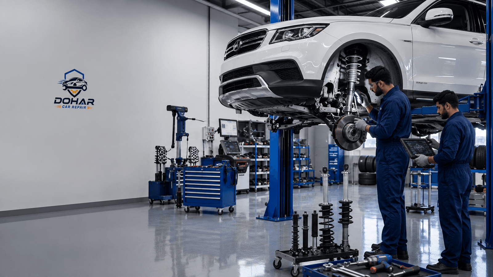
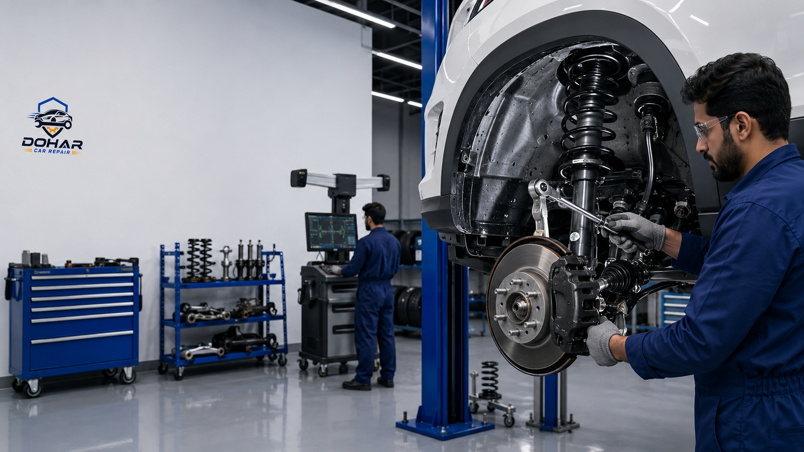
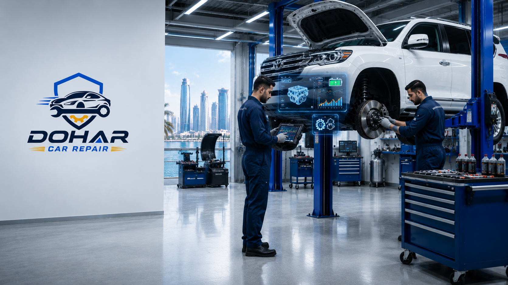

If your car bounces excessively over speed bumps, clunks through roundabouts, or feels unstable at highway speeds on Salwa Road, you likely need Suspension Repair Doha drivers trust for a safe, comfortable ride. Your suspension system is the link between the road and your cabin — it controls tire contact, absorbs impacts, and keeps steering predictable. In Qatar’s demanding mix of urban bumps, curb hits, and extreme heat that softens rubber bushings, worn shocks, struts, and control arms fail faster than many owners expect. This complete guide explains why suspension health matters here, how to spot warning signs early, what a professional repair process looks like, typical costs in QAR, and why Dohar Car Repair is the right workshop for expert shock absorber, strut, and full suspension system service in Doha, Qatar.

Why Suspension Health Matters on Qatar Roads
Suspension is not only about comfort. A healthy system keeps your tires planted so braking and cornering stay reliable — especially when you share busy corridors with sudden lane changes and frequent braking. When shocks and struts weaken, the car’s weight transfers poorly under load. That means longer stopping distances, more body roll in roundabouts, and a greater risk of losing control if you hit a deep dip or unmarked speed cushion at night.
Qatar roads add unique stress. Residential areas and service roads are full of speed bumps designed to slow traffic. Major arterials and intersections force constant roundabout navigation. High-speed stretches such as Salwa Road demand stable high-speed tracking. Everyday curb hits when parking or squeezing through construction zones damage lower control arms, ball joints, and wheels. Meanwhile, summer heat cooks rubber bushings and mounts until they crack, sag, or separate. Ignoring early wear turns a simple shock replacement into a multi-part repair that also affects tire life and alignment.
Drivers who invest in timely suspension care notice a quieter cabin, flatter cornering, and tires that wear evenly. That directly protects the investment in your vehicle and supports related systems — including brakes — which work harder when the chassis is unstable. For a deeper look at how chassis and braking systems interact, see our guide to brake repair and service in Doha.
Qatar Road Reality
Repeated impact from speed bumps, aggressive roundabout entries, Salwa Road undulations, curb strikes, and heat-hardened (then cracked) rubber bushings is the fastest path to worn shocks and noisy control arms in Doha. Do not wait for a metal-on-metal knock before booking diagnosis.
Common Causes of Suspension Wear in Doha
Understanding what wears your suspension helps you prevent damage and budget for service before a breakdown. These are the issues we see most often at Dohar Car Repair:
- Speed bumps and raised cushions: Taking them too fast compresses shocks beyond design limits and hammers coil springs, bump stops, and top mounts. Over months, this empties hydraulic dampers and creates the classic “boat-like” bounce.
- Roundabout and junction loads: Lateral force through turns stresses outer suspension arms, stabilizer links, and bushings. Loose links produce rattles every time you enter or exit a roundabout in West Bay, Al Sadd, or Al Rayyan areas.
- Salwa Road and highway speeds: At higher speed, worn dampers cannot control rebound. The front end feels light, the rear skates on uneven pavement, and steering correction becomes constant.
- Curb hits and pothole impacts: A single hard curb strike can bend a lower arm, crack a rim, or ruin a strut. Combined with previous wear, the car then pulls, vibrates, or sits unevenly.
- Heat affecting rubber bushings: Qatar’s summer softens then ages polyurethane and rubber isolators. Cracked bushings allow metal sleeves to knock, ruin alignment angles, and accelerate tire wear on the inner or outer shoulder.
- Dust and fine sand: Abrasive dust works into seals on strut rods and damper shafts. Leaking oil is a clear signal that damping ability is gone and replacement is due.
- Overloaded vehicles: Hauling heavy cargo or frequent full passenger loads without matching spring rates fatigues springs and rear shocks prematurely.
Many of these causes overlap. A car that daily crosses speed bumps, then runs at speed on Salwa Road, then parks with occasional curb contacts will age suspension parts far faster than a highway-only vehicle in a milder climate. That is why scheduled undercar inspections matter as much as oil changes for Doha drivers.
Warning Signs Your Suspension Needs Attention
Catching symptoms early keeps costs lower and preserves ride quality. Watch for these clear indicators that professional service is due:
Excessive Bounce After Bumps
After a speed bump or dip, a healthy car settles in one controlled motion. If the body keeps oscillating two or three times, the dampers are worn. This is one of the most common reasons customers search for Suspension Repair Doha workshops and book a same-day check.
Clunking, Knocking, or Rattling
Noise over rough patches, at the start of a turn, or when reversing into a sloping driveway often comes from worn stabilizer links, ball joints, strut mounts, or control-arm bushings. Metal-on-metal sounds should never be ignored — a failed joint can separate under load.
Nose Dive or Rear Squatting
Hard braking that dips the front sharply, or acceleration that squats the rear, points to weak front or rear shocks. Beyond comfort, this delays weight transfer control and can extend stopping distance.
Uneven or Premature Tire Wear
Cupping, feathering, or one-sided shoulder wear frequently traces back to bad alignment caused by collapsed bushings or bent arms — not just tire pressure. Replacing tires alone without fixing suspension waste money. Pair tire work with a proper undercar diagnosis whenever wear is unusual.
Pulling, Wandering, or Vague Steering
If you constantly correct the wheel on a straight road, or the car feels “loose” in lane changes, suspension geometry or damping is likely compromised. Steering components and suspension often need joint inspection.
Leaking Shock or Strut Oil
Wet, oily residue on a damper body means internal seals have failed. Damping force drops quickly after that. Leaking units should be replaced, usually in axle pairs for balanced handling.
Visible Sag or Uneven Ride Height
A corner sitting lower than others, especially at the rear of SUVs and family cars popular in Qatar, can indicate broken springs or collapsed mounts. Measure visually on level ground before and after a short drive.

Professional Suspension Repair Process at Dohar Car Repair
Guesswork leads to replacing the wrong part. Our process is structured, transparent, and built for Qatar driving conditions:
- Road-feel interview and symptom confirmation
We ask where you notice noise or bounce — speed bumps, roundabouts, highway — so technicians know which circuits to prioritize during inspection.
- Lift inspection and component test
On the hoist we check shocks and struts for leaks, test bushings and ball joints for play, inspect springs and bump stops, and examine links, mounts, and subframe fasteners.
- Tire and alignment assessment
We read tire wear patterns and note camber, caster, and toe contribution. Suspension work without a follow-up alignment plan rarely delivers lasting results.
- Transparent written quote
You receive a clear parts-and-labour estimate before work starts. We explain what is urgent versus what can wait safely for a short period.
- Quality parts and axle-balanced repairs
We replace failed dampers and critical wear items with parts suited to heat and rough roads, typically matching left and right on the same axle.
- Torque to specification and road test
After assembly we torque fasteners correctly, recheck geometry needs, and road-test over bumps and turns typical of Doha streets.
"A quiet cabin and a planted feel on Salwa Road are not luxuries — they are signs your suspension is doing its job. We show customers the worn bushings and leaking shocks before we quote, so every repair decision is informed."
Types of Suspension Work We Handle
Whether you drive a compact sedan, a family SUV, or a light commercial vehicle, Dohar Car Repair covers the full range of suspension services commonly needed in Qatar:
Shock Absorber Replacement
Conventional rear and front shocks that have lost damping or started leaking are replaced with quality units rated for local temperatures. Pairing both sides on an axle restores balance and prevents the newer side from working harder than the old side.
Strut Repair and Strut Assembly Service
MacPherson strut fronts are common on Doha roads. We replace worn strut cartridges or complete assemblies, renew mount bearings that squeak when turning, and inspect the coil spring for cracks or sag before reassembly.
Control Arms, Ball Joints, and Bushings
Heat-soaked rubber bushings and worn ball joints create clunks and destroy tire wear. We replace arms or press new bushings where the design allows, then verify geometry.
Stabilizer (Sway) Bar Links and Bushes
Rattles over every speed bump are often cheap links. Replacing them is quick and transforms daily city driving comfort, especially around dense roundabout networks.
Coil Springs and Ride-Height Correction
Broken or sagged springs are unsafe. We renew springs, check for related damper damage from bottoming out, and restore even stance.
Wheel Bearing and Hub Noise Diagnosis
Growling that changes with speed can be a bearing, not a strut. We differentiate suspension noise from hub issues so you do not pay for the wrong repair.
Post-Repair Wheel Alignment Support
After major suspension work, alignment is essential. We advise and coordinate correct camber and toe settings so new tires and new parts last as designed.
If your car also needs broader mechanical attention — for example after an impact that bent more than one corner — review our professional car repair service guide for Doha and our page on car engine repair in Doha when powertrain symptoms appear together with chassis issues. Accident-related chassis damage may also relate to options covered in buying or selling accident cars in Qatar.

Suspension Maintenance Tips for Qatar Drivers
You cannot eliminate wear, but you can slow it and spot problems sooner:
- Approach speed bumps slowly: Cross at an angle when safe, and never accelerate mid-bump. This single habit extends shock life dramatically.
- Avoid curb climbing: Use proper parking approaches. A curb hit can cost far more than a few minutes of repositioning.
- Keep tires correctly inflated: Underinflation multiplies suspension stress and heat. Check pressures in the cool morning before long Salwa Road trips.
- Rotate tires on schedule: Rotation reveals uneven wear early and supports even load on arms and dampers.
- Wash the undercarriage occasionally: Rinse sand and salt traces that abrade seals and fasteners, especially after desert or construction-zone driving.
- Inspect after any hard impact: If you hit a deep pothole or scrap a ramp, book a quick lift check rather than waiting for a knock to appear weeks later.
- Listen and feel monthly: Note new rattles in roundabouts or a change in bounce over familiar bumps near home — those are early, free diagnostics.
- Service AC and driveline on time too: A well-maintained car is inspected more often overall; use routine visits for undercar glances. See our car AC repair in Doha guide for climate-system care that often coincides with seasonal workshop visits.
Practical Tip
Push down firmly on each corner of the car. If it keeps bouncing instead of rising once and settling, schedule a damper inspection. Combine that with a look for oily residue on shock bodies before Qatar’s peak summer heat.
Common Mistakes Drivers Make with Suspension Problems
Avoid these errors — they cost money and reduce safety:
- Replacing only one shock: A single new damper on an axle with a weak partner creates uneven handling. Replace in pairs unless a brand-new opposite side is already confirmed healthy.
- Ignoring bushings after new shocks: Fresh dampers cannot fix clunks from cracked rubber. Diagnose noise sources separately.
- Buying the cheapest unknown parts: Low-grade shocks fade quickly in heat. Choose components rated for high ambient temperatures and rough roads.
- Skipping alignment after geometry parts: New control arms without alignment leave tires scrubbing and the steering feel off-center.
- Assuming tire wear is “just tires”: Cupping and inner-edge wear often mean suspension and alignment first, rubber second.
- Driving for months on leaking struts: Oil-soaked dampers escalate spring and tire damage and raise emergency-stop risk at highway speed.
- DIY spring compression without tools: Strut spring work is dangerous. Leave coil compression and mount replacement to professionals.
Suspension Repair Cost in Qatar (QAR)
Prices vary by vehicle make, part quality (OEM vs quality aftermarket), and whether related parts are worn. Typical Doha market ranges at Dohar Car Repair fall approximately here:
- Suspension inspection / diagnosis: Often free or low-cost with booked service
- Shock absorber replacement (per axle pair): 400–1,200 QAR parts and labour
- Complete strut assembly (per side): 350–900 QAR depending on model
- Stabilizer link pair: 150–400 QAR
- Control arm with bushings (each): 300–900 QAR
- Ball joint service or replacement: 200–600 QAR
- Coil spring replacement (per side): 250–700 QAR
- Full front suspension refresh (struts, links, key bushings): 1,500–4,000+ QAR
- Wheel alignment (after repair): 100–250 QAR
Luxury and European models, or electronically adaptive dampers, sit above these ranges. We always confirm fitment and provide a written quote before starting. Honest diagnosis prevents paying for parts you do not need — and ensures you do not leave with half-fixed noise.
Benefits of Professional Suspension Service
Choosing a trained workshop over guesswork or delayed DIY pays off in several ways:
- Restored ride comfort: Controlled damping removes the harsh slam and floating bounce over Qatar’s speed cushions.
- Better safety margins: Stable tire contact improves emergency braking and mid-corner confidence in roundabouts.
- Longer tire life: Correct geometry and damping reduce cupping and shoulder wear, saving hundreds of QAR per set.
- Less cabin fatigue: Quieter links and mounts mean less noise on daily Doha commutes.
- Protected related systems: Healthy suspension reduces stress on mounts, steering racks, and even brake components under dive.
- Documented warranty: Professional parts and labour come with clear coverage and recheck support.
"Customers often tell us they did not realise how tired the car felt until the new shocks were fitted. The right Suspension Repair Doha service should make the first drive home feel composed again — not just quieter for a week."
Why Choose Dohar Car Repair for Suspension Work
Dohar Car Repair brings Qatar-specific experience to every undercar job. Our technicians understand how heat softens bushings, how repeated speed-bump abuse empties dampers, and how curb strikes present on popular SUV and sedan platforms. We combine lift inspections with clear photos and explanations so you approve work with full visibility.
We stock and source quality shock absorbers, strut assemblies, links, and arms suited to regional conditions. Same-day diagnosis is available for common noise and bounce complaints, and we coordinate follow-up alignment guidance after geometry-related repairs. Alongside suspension, our team supports full workshop needs — from brake service to AC repair — so multi-system cars can be sorted in one trusted location on Street 27, Doha.
Transparent pricing, careful road testing, and customer-first communication are standard. Whether you need a pair of rear shocks before a long trip or a full front-end refresh after months of knocking, we treat ride quality and safety as non-negotiable.
Book Same-Day Suspension Diagnosis
Clunking over bumps or bouncing on Salwa Road? Call Dohar Car Repair at 0097472223959 or WhatsApp us for expert suspension, shock, and strut service in Doha. Smooth, stable ride restored with honest quotes.
FAQ: Suspension Repair in Doha, Qatar
How often should I inspect suspension in Qatar?
Have a visual undercar check at least every 10,000–15,000 km, or sooner after any hard curb or pothole impact. Heat and speed bumps justify more frequent checks than milder climates.
Can I drive with a leaking shock absorber?
Short distances at low speed may be possible, but damping fades quickly. Plan replacement promptly — especially before highway trips — because control and tire wear worsen rapidly.
Why does my car rattle only over speed bumps?
Stabilizer links, strut mounts, and control-arm bushings commonly cause speed-bump-only noise. A lift inspection isolates the joint with play; guessing with parts spray rarely fixes it permanently.
Do I need an alignment after new struts?
Yes, whenever struts, control arms, or other geometry-related parts are replaced. Alignment protects new tires and restores straight-line tracking.
Are OEM shocks required?
Not always. High-quality aftermarket dampers designed for heat and load can perform excellently. We recommend by vehicle and usage — taxi and heavy SUV duty may need different specs than a lightly driven sedan.
How long does suspension repair take?
Link or single-axle shock jobs often finish the same day. Full front strut and arm packages may take longer depending on seized fasteners and parts availability. We give a time window with your quote.
Conclusion: Restore Ride Quality with Suspension Repair Doha Experts
Qatar’s mix of speed bumps, roundabouts, Salwa Road speeds, curb hits, and extreme heat that destroys rubber bushings makes suspension wear inevitable — but sudden failure and uneven tires are preventable. When bounce, clunks, or wandering steering appear, early professional care protects safety and budget. Dohar Car Repair delivers Suspension Repair Doha motorists rely on: thorough diagnosis, quality shocks and struts, honest QAR pricing, and road testing that confirms a planted, quiet ride.
Ready to stop the bounce and the noise? Contact us today for same-day suspension diagnosis. Call 0097472223959, WhatsApp our team, or visit through our contact page to book your appointment. Smooth roads start under the car — let our technicians put yours back in control.